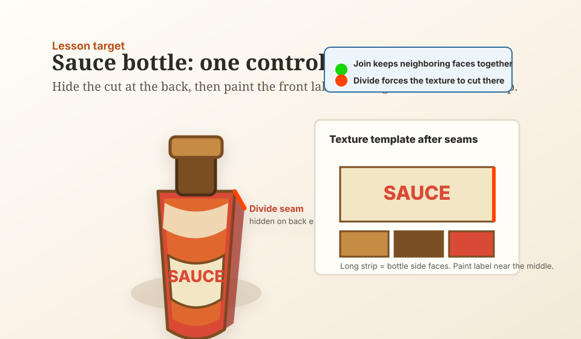

Day 10 — Week 2: UV control
10Sauce bottle — Seam Tool
You have already moved a face's UV rectangle and used Knife to split shapes. Today you learn the Seam Tool: tell Blockbench where a mesh texture should cut before generating the texture template.
One little sauce bottle render: a low-poly mesh bottle with a label on the front and the UV cut hidden on the back. The new skill is choosing where the generated texture layout splits.
Warm up — 30-second recall
Answer first, then open the cards.
What does UV mapping change?
What did Knife Tool do for the prep counter?
Why do we keep using the same palette?
The one new idea — a seam is a planned texture cut
A seam is not a painted line on the model. It is an instruction for UV unwrapping: this edge may become a cut in the flat texture layout. For a bottle, you usually hide that cut on the back so the label can sit cleanly on the front.
Blockbench's source describes Seam Tool as a tool for defining UV seams on mesh edges. The official overview also separates Edit Mode UV setup from Paint Mode texture editing, so today the order is: mesh first, seam second, texture template third, paint last. [Seam Tool source] [Blockbench Wiki — Edit/Paint modes]
Seam Tool is for meshes, not ordinary cube elements. Today we use Add Mesh → Cylinder for the bottle body so the tool has mesh edges to work on.

Settings tutorial — Select UV Seam
When Seam Tool is active, the important toolbar control is Select UV Seam. Blockbench exposes three modes. Use only one Divide seam today unless the generated side strip breaks apart.
| Mode | What it means | Beginner-safe use |
|---|---|---|
| Auto | Blockbench decides. | Default for most edges. |
| Divide | Force a UV cut there. | Use on one hidden back edge. |
| Join | Force faces to stay connected. | Use only if the side strip breaks into too many islands. |
Do it with me
Keep the Seam Tool Cheat Sheet and the Course Palette open.
-
New Generic Model → name it
Save early. This is a small condiment prop for the kitchen pack, not a UV science project.sauce-bottle-seam-tool -
Add the bottle body as a mesh cylinder
In the Outliner, choose Add Element → Add Mesh. Pick Shape: Cylinder. Suggested values:Sides 12,Diameter 2.4,Height 5. Name itbottle_body_mesh. -
Add a chunky cap
Add a small cube or another short mesh cylinder above the body. Fill it with Dark Wood or Wood. Name itcap. The cap is not today's seam practice; it only makes the render read as a bottle. -
Pick the hidden back edge
Orbit to the back of the bottle body. Selectbottle_body_mesh, choose Seam Tool, and click one vertical edge on the back. Seam Tool should put you into edge selection and solid view. -
Set that edge to Divide
In the Seam Tool toolbar, set Select UV Seam → Divide. The selected edge should tint red or orange. That means "cut the texture layout here." -
Leave the other edges on Auto
Do not mark every edge. One hidden cut is easier to reason about. If you accidentally mark the wrong edge, select it again and set Select UV Seam → Auto. -
Create a texture template
In the Textures panel, choose Create Texture, then use Texture Template. Keep Rearrange UVs enabled if the dialog offers it. Use32 × 32or64 × 64; choose64 × 64if the label text feels cramped. -
Find the bottle side strip
The template should include a long strip or a set of connected side panels for the cylinder. That strip is where the bottle body texture lives. The hidden Divide seam is the end of the strip, not the place for the front label. -
Paint the front label
Switch to Paint Mode. Paint the body Tomato. On the middle of the side strip, paint a cream label rectangle and add simple red marks likeSAUCE, a line, or one tomato dot. Keep it readable at thumbnail size. -
Check the seam placement
Orbit the model. The label should be visible on the front, and any awkward texture break should sit on the back. If the label lands near the back cut, move the label pixels along the strip or use the UV panel from Lesson 7 to reposition the island. -
Only if needed: use Join
If the bottle side becomes many separate panels, select the vertical edges you want connected and set them to Join, leaving the back edge as Divide. Then regenerate the texture template. Skip this if your strip already looks usable. -
Render the new prop
Capture a 3/4 front view where the label is readable. Place it beside the prep counter, bread basket, or chopping board if you want the post to look like a growing kitchen pack. -
Post your Day-10 update
Publish the render on itch.io and RedNote with the captions below. Streak: Day 10.
A seam is not the label. A seam is the controlled cut that makes the flat label area easier to place and paint.
itch.io post (English):
RedNote / 小红书 (中文):
Quick self-check
Say the answer first, then open the card.
Does Seam Tool paint the model?
Why did we put Divide on the back edge?
What should stay on Auto today?
When would you use Join?
Skim the Seam Tool Cheat Sheet, then open the Blockbench source links if you want the exact behavior. The key source-backed point: Divide blocks faces from joining in the generated texture template, while Join forces them together.
If the seam tool does not appear, the label lands on the wrong side, or the template looks fragmented, tell me whether your bottle body is a mesh and what the selected seam mode says.